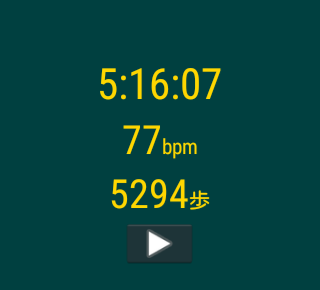
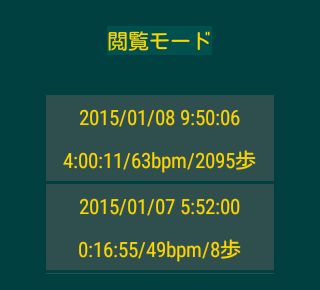
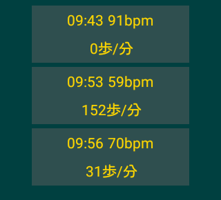

Gambarumeterは、心拍数、距離、歩数を計測するアプリケーションです。
Android Wear搭載のスマートウォッチで動作します。
モトローラのMoto 360の場合、心拍数と歩数を計測します。
ソニーのSmartWatch3 SWR50の場合、距離と歩数を計測します。
インストールにはAndroid 4.3以上を搭載したスマートフォンが必要です。
アプリケーションの動作時にはスマートフォンは必要ありません。
このアプリケーションは単独で動作します。
使い方
メイン画面
起動するとメイン画面が表示されます。
ボタンをタップ、または画面上のどこかをダブルタップすると計測を開始します。
同じボタンをタップ、または画面上のどこかをダブルタップすると計測を終了します。
距離を計測できるスマートウォッチの場合、システム設定画面で「位置情報」をONにして起動してください。
最初は距離表示が「-.--km」になっています。最初の位置情報を実際に受け取ると「0.00km」に変わり、距離の計測ができるようになります。
履歴画面
 右にスワイプすると過去の記録が表示されます。
「閲覧モード」では、特定の行をタップするとその記録の詳細が表示されます。
「編集モード」では、特定の行をタップするとその記録を削除できます。削除の前に確認ダイアログが表示されます。
「閲覧モード」をタップすると編集モード、「編集モード」をタップすると閲覧モードに切り替わります。
設定画面
距離を計測できるスマートウォッチの場合、記録画面で左にスワイプすると設定画面が表示されます。
通知

計測中は画面下部に通知が表示されます。通知をタップするとメイン画面が表示されます。
音声コマンド
スマートフォンに接続した状態の場合、音声でアプリケーションを開始できます。
「ランニング開始」または「ワークアウト開始」でアプリケーションが起動して計測を開始します。
「ランニング終了」「ワークアウト開始」は使えません。計測中の記録が消えてしまうのでご注意ください。